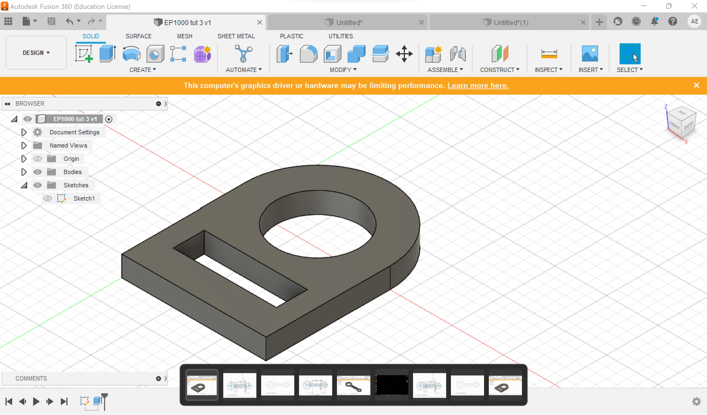

My first task on Autodesk Fusion 360 was to create the above design. As it was my first time using any design software, I found it easier for me to break down the design into smaller bite-sized tasks to create the final 3D structure. First, I built the dominant shapes; rectanlges, circles and arcs; in 2D in it's front view (a top-down view/ bird's eye view/ whatever that is familiar to you). Next, I had to constrict the design to create fixed lines. This helped the next step to come into fruition, which is to finally finish the sketch and extrude it upwards and create the final 3D form.